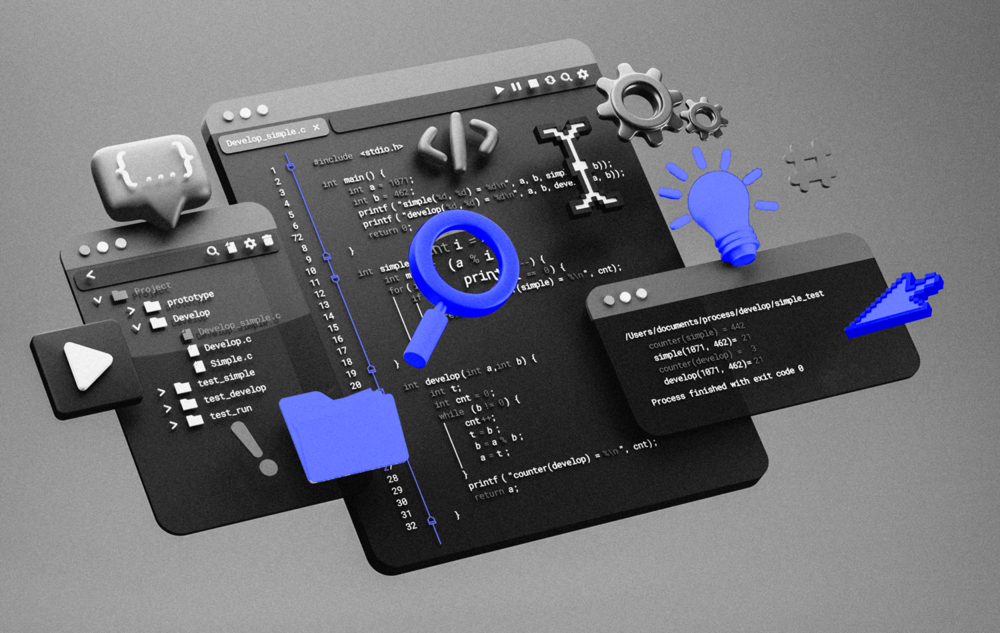

Aprenda os conceitos fundamentais da linguagem C de forma organizada.

Este material foi organizado em tópicos dedicados para facilitar seu aprendizado. A linguagem C é uma ótima porta de entrada para entender lógica, variáveis, memória, compilação e construção de programas mais próximos do funcionamento real do computador.
Uma boa forma de aprender C é seguir uma sequência simples: leia o conceito, copie o exemplo, compile, execute e depois altere pequenos detalhes para observar o resultado.
printf e scanf para entrada e saída.if, else e switch.for, while e do...while.Este exemplo reúne os primeiros conceitos: biblioteca, função principal, variável, entrada, saída e retorno do programa.
#include <stdio.h>
int main(void) {
int idade;
printf("Digite sua idade: ");
scanf("%d", &idade);
printf("Voce tem %d anos.\n", idade);
return 0;
}